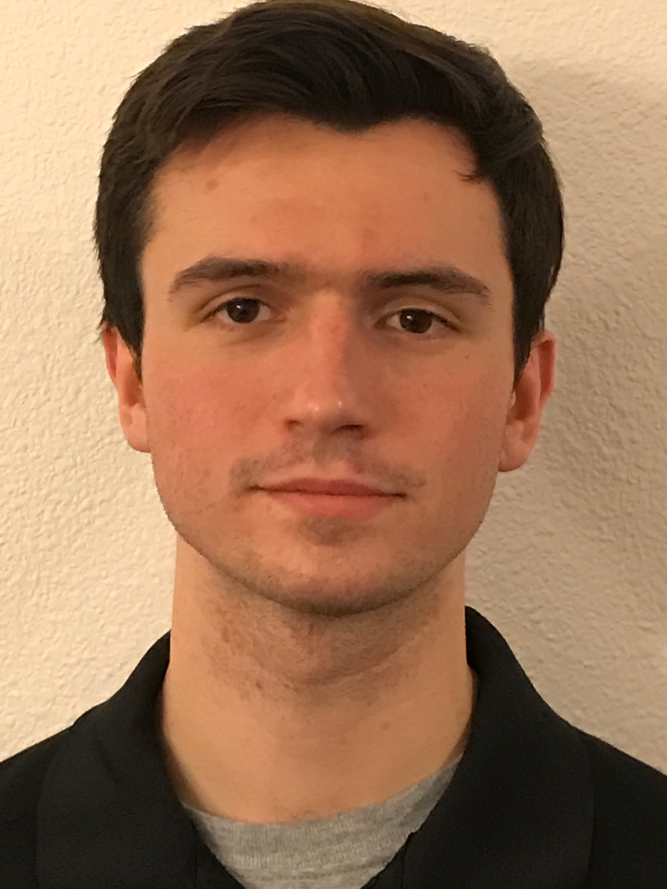

About Me
Current Position and Background
Even though my career is just getting started, I've been lucky to have some amazing experiences already! I have been Systems Engineer at BAE Systems since June of 2019. I am a member of their advanced signal processing team, within the GPS group. Very rarely do I do typical systems engineering work. Most of my work involves writing MATLAB scripts, working on signal processing problems and working on firmware models. I graduated with an Electrical Engineering degree from Iowa State University in May of 2019. While at ISU I became interested in working with communication systems, signal processing and Machine learning. I was able to get some communications experience while working two internships at Motorola Solutions, a land mobile radio company. I have had the opportunity to grow my knowledge of machine learning and signal Processing through research projects while at BAE.
Goals and Career Asperations
At the early stages of my career I often find myself thinking about what I would like to accomplish in the future. I try to keep track of both my short and long term goals. My most important goal is constantly maintain a list of current projects in progress and topics to learn. I believe this goal critical to my development as an engineer.
My first and most certain career goal is to hold a management position that includes high influence decision making and complete understanding of a product or product line. I hope to one day be trusted to make major decisions and to lead and motivate my coworkers. In order to get to this position, I plan to return to school for a masters degree, although I am still undecided if I want to persue a MBA or MSEE. I would like to obtain a patent in my career and potentially start my own engineering company. All of these goals are long term and will require a lot of work to achieve, which is why I have short term goal to steer me in the right direction.
I have several short term goals this year, with some being project based and others focused on honing new skills. One of my goals this year is to develop an android app that tracks my goals and helps me reduce wasted time on my phone. Some secondary goals are to grow my signal processing abilities by developing a digital synthesizer and creating an interface for a facial recognition algorithm that I created my senior year of college. I believe these goals will help me understand the challenges of creating products and integrating algorithms into products. In my current position I have a lot of signal processing techniques to learn about. This year I would like to practice problems and understand the following topics: the hilbert transform, windowing, and GPS modulation and frequency shifting techniques. A stretch goal for me would be to develop a better understanding neural networks.
Interests
The three topics I am most interested in working on are machine learning, signal processing and communication systems. I have taken entry level classes on each of these topics in college and in my current position I am lucky enough to be working on a machine learning research project for GPS systems. At work, I am currently developing my skills in each of these three areas. I plan on working on several machine learning side projects in the near future, and have experience implimenting several types of algorithms already! I have very little experience working with neural networks, but I am excited to learn more about them this year.
Personal Life
I was born and raised in the Northwest Suburbs of Chicago. I attended Cary-Grove Highschool in Cary Illinois.In my spare time, when I am not working on things like this, I love to play sports. Specifically Basketball, Golf and Football. I also like to run and workout in general. I am a huge sports fan, and I love all chicago sports teams. White Sox over Cubs!